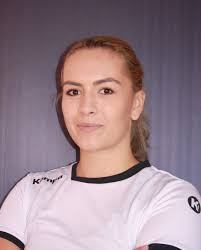

Marii Jucători Români de Volei
Laurențiu Lica
Născut în 1986, Laurențiu Lica este unul dintre cei mai valoroși jucători români ai ultimilor 15 ani. A
evoluat la CSM București, unde a devenit unul dintre cei mai buni atacanți din Liga Națională. Cu o înălțime
de 2,02m, Lica s-a remarcat prin atacurile sale puternice și abilitățile de bloc.
În echipa națională a României, Lica a fost un pilon important, participând la multiple Campionate Europene.
În 2015, a fost desemnat cel mai bun jucător al Ligii Naționale, recunoaștere pentru contribuția sa constantă
la succesul echipei sale. După retragere, a devenit antrenor, continuând să contribuie la dezvoltarea
voleiului românesc.
Adrian Radu Gontariu
Legenda voleiului românesc, Adrian Radu Gontariu (născut în 1967) a fost căpitanul echipei naționale în anii
'90, perioadă considerată "epoca de aur" a voleiului masculin din România. Cu o carieră internațională
impresionantă, a jucat în Italia, Franța și Grecia, fiind recunoscut pentru tehnică sa rafinată și spiritul de
lider.
Sub conducerea sa, echipa României a obținut locul 5 la Campionatul European din 1991 și locul 7 la
Campionatul Mondial din 1990. Gontariu a fost primul jucător român nominalizat la echipa ideală a unui
Campionat European. După retragere, a activat ca antrenor principal al echipei naționale și comentator
sportiv.

Daniela Marin
Cea mai de succes jucătoare română de volei, Daniela Marin (născută în 1962) a condus echipa națională
feminină în anii '80. A câștigat medalia de bronz la Campionatul European din 1983 și locul 4 la Campionatul
Mondial din 1986, performanțe nemaiîntâlnite de atunci în voleiul feminin românesc.
Marin s-a remarcat prin atacurile sale spectaculoase și abilitatea de a schimba cursul unui meci. A jucat în
Spania și Italia, unde a fost de multe ori cea mai bună marcatoare a competiției. În 2010, a fost inclusă în
"Hall of Fame"-ul voleiului european, singura română care a primit această distincție.